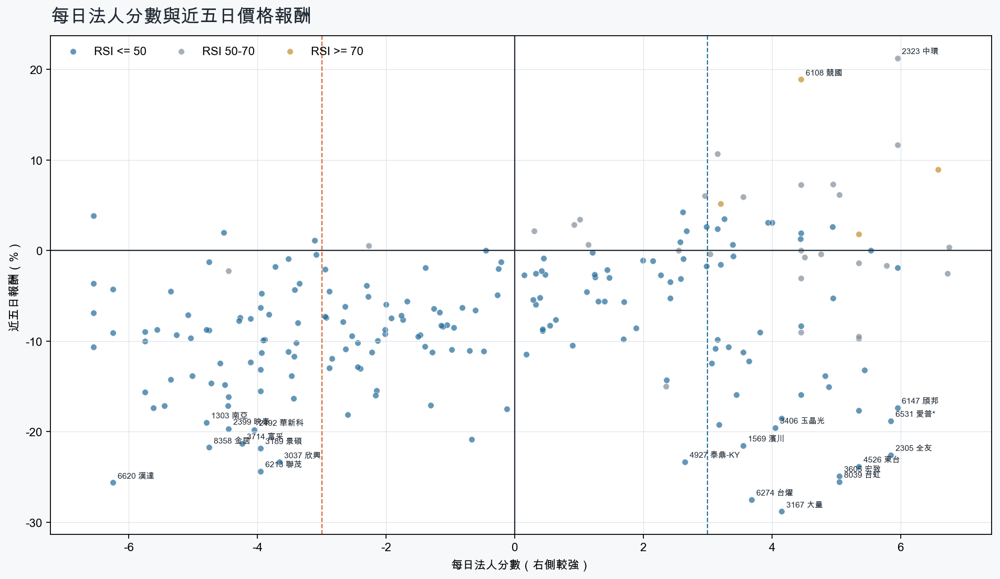
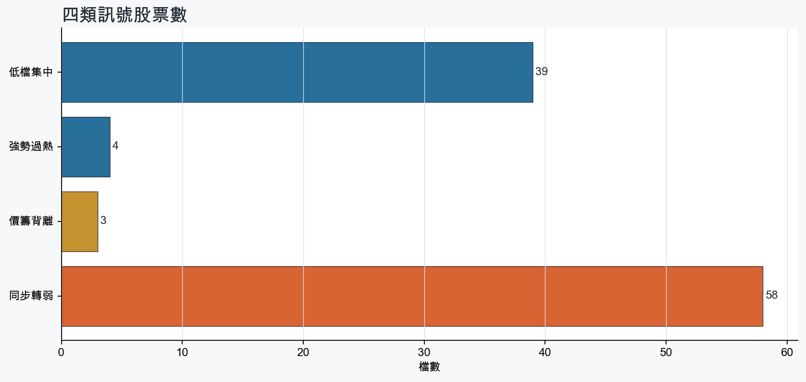
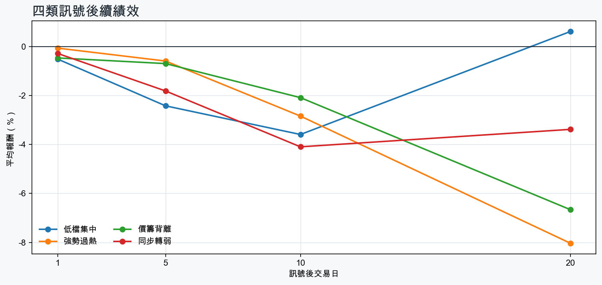

市場情緒偏空
近5日法人合計-6,231,712 張
篩選池上漲比例15.0%
籌碼好 / RSI低15 檔
籌碼差 / 價跌15 檔



EPS × PE VALUATION
法人常用的相對估值
顯示保守、基準與樂觀估值帶，不把單一數字包裝成精準目標價。
最新累計 EPS 依季數年化 × 同產業有效 P/E 的 Q25／中位數／Q75。排除本公司、非正 P/E，並以 1.5×IQR 排除離群值。估值帶是公開資料篩選值，不是法人目標價；未使用分析師預估 EPS。
MOOD × MONEY
情緒與籌碼雷達
熱度代表被討論程度；情緒分與法人方向分開計算。熱門不等於適合追價，樣本不足也不硬判多空。
| 股票 | 情緒 | 討論熱度 | 情緒 × 籌碼 | 情緒 × 基本面 |
|---|---|---|---|---|
| 3037 欣興同步轉弱 | 偏空 -21.6信心 100 | 1003 篇 / 301 留言 / 3 則新聞 | 情籌雙弱法人分 -3.7 | 基本面佳、情緒悲觀基本面分 +3.6 |
| 3189 景碩同步轉弱 | 情緒高漲 +41.2信心 84 | 761 篇 / 67 留言 / 3 則新聞 | 熱門但法人撤退法人分 -4.0 | 基本面與情緒共振基本面分 +3.6 |
| 1210 大成低檔集中 | 偏空 -34.7信心 65 | 681 篇 / 34 留言 / 3 則新聞 | 法人布局、市場悲觀法人分 +4.9 | 基本面佳、情緒悲觀基本面分 +3.0 |
| 1303 南亞同步轉弱 | 偏多 +29.7信心 30 | 400 篇 / 0 留言 / 3 則新聞 | 熱門但法人撤退法人分 -4.8 | 基本面與情緒共振基本面分 +3.6 |
| 4958 臻鼎-KY同步轉弱 | 中性分歧 +0.0信心 30 | 400 篇 / 0 留言 / 3 則新聞 | 情籌混合法人分 -5.5 | 基本面與情緒分歧基本面分 +3.0 |
| 3714 富采同步轉弱 | 偏空 -29.7信心 30 | 400 篇 / 0 留言 / 3 則新聞 | 情籌雙弱法人分 -4.2 | 基本面佳、情緒悲觀基本面分 +1.2 |
| 6285 啟碁價籌背離 | 偏多 +29.7信心 30 | 400 篇 / 0 留言 / 3 則新聞 | 熱門但法人撤退法人分 -6.5 | 基本面與情緒共振基本面分 +3.0 |
| 3704 合勤控價籌背離 | 偏多 +29.7信心 30 | 400 篇 / 0 留言 / 3 則新聞 | 熱門但法人撤退法人分 -4.5 | 基本面與情緒共振基本面分 +3.0 |
| 1476 儒鴻強勢過熱 | 中性分歧 +0.0信心 30 | 400 篇 / 0 留言 / 3 則新聞 | 情籌混合法人分 +6.6 | 基本面與情緒分歧基本面分 +3.0 |
| 6199 天品強勢過熱 | 中性分歧 +0.0信心 30 | 400 篇 / 0 留言 / 3 則新聞 | 情籌混合法人分 +5.3 | 基本面與情緒分歧基本面分 +3.6 |
| 6108 競國強勢過熱 | 中性分歧 +0.0信心 30 | 400 篇 / 0 留言 / 3 則新聞 | 情籌混合法人分 +4.5 | 基本面與情緒分歧基本面分 +1.8 |
| 3665 貿聯-KY低檔集中 | 偏多 +29.7信心 30 | 400 篇 / 0 留言 / 3 則新聞 | 情籌共振法人分 +6.0 | 基本面與情緒共振基本面分 +3.6 |
01
籌碼好 / RSI低
優先研究基本面；法人續買且價格止穩時，才適合分批觀察。
| 股票 / 確認狀態 | 每日法人分 | 浦男式近似 | 法人加速度 | RSI / 相對強弱 | 量價確認 | 融資融券 | 每週集保確認 | 基本面 | EPS × 同業 P/E 估值 | 情緒 / 情籌 | 近期消息 | 論壇討論 |
|---|---|---|---|---|---|---|---|---|---|---|---|---|
| 2609 陽明可研究 · 96 分籌碼與價格確認，可列研究清單 | +3.1法人 +18,349 張 / 4 天 | 接近 · 90中期均線偏多；法人籌碼偏多；法人買盤加速；留意未站月線 | +13,194 張近3日 +13,567 / 連續 +4 日 | 45.1相對大盤 +11.4% | 量比 1.10確認分 +4.5收盤跌破20日線 | -%融資 - 張 / 融券 - 張 | +1.00 pp1000張 +0.99 pp | 單月營收年增 +82.4%；累計營收年增 +23.2%；2026 Q3 累計 EPS 7.37仍需觀察下一期財報延續性來源：公開資訊觀測站 | 基準 NT$ 93.55估值帶 80.09–131.5現價 60.50 · 低於估值帶 · 距基準 +54.6%2026 Q3 累計 EPS 7.37 → 年化 9.83航運業同業 P/E 8.15／9.52／13.38 · n=26 · 信心較高以 Q3 累計 EPS 年化，不等同分析師全年預估來源：TWSE／TPEx 每日本益比 | 樣本不足 +0.0熱度 0 / 信心 0情緒樣本不足 | 近期沒有通過股票語境篩選的新聞 | 近期沒有明確提及本股的論壇樣本 |
| 3305 昇貿等待確認 · 89 分籌碼有訊號，但價格尚未確認 | +4.5法人 +1,649 張 / 3 天 | 接近 · 83站上月線；法人籌碼偏多；買超具延續性；留意中期均線未翻多、法人買盤未加速 | -2,337 張近3日 -356 / 連續 +1 日 | 49.1相對大盤 +8.9% | 量比 1.95確認分 +2.520日線低於60日線；法人買盤減速 | -%融資 - 張 / 融券 - 張 | -0.10 pp1000張 +0.41 pp | 單月營收年增 +53.1%；累計營收年增 +58.9%；2026 Q3 累計 EPS 6.36仍需觀察下一期財報延續性來源：公開資訊觀測站 | 基準 NT$ 156.1估值帶 106.8–204.9現價 107.5 · 估值帶內 · 距基準 +45.2%2026 Q3 累計 EPS 6.36 → 年化 8.48其他電子同業 P/E 12.60／18.41／24.16 · n=69 · 信心較高以 Q3 累計 EPS 年化，不等同分析師全年預估來源：TWSE／TPEx 每日本益比 | 中性分歧 +0.0熱度 34 / 信心 20情籌混合 | 【09:50 即時新聞】昇貿(3305)盤中走強，AI封裝材料題材續受關注CMoney投資網誌 · 11/18低軌衛星全面點火！事欣科、昇貿領6檔漲停 萊德光電續強聚財網 · 11/18 | 近期沒有明確提及本股的論壇樣本 |
| 6112 邁達特等待確認 · 82 分籌碼有訊號，但價格尚未確認 | +5.3法人 +2,020 張 / 4 天 | 接近 · 83中期均線偏多；法人籌碼偏多；買超具延續性；留意未站月線、法人買盤未加速 | -179 張近3日 -240 / 連續 +2 日 | 48.3相對大盤 +13.4% | 量比 1.02確認分 -0.2收盤跌破20日線；法人買盤減速 | -%融資 - 張 / 融券 - 張 | +2.22 pp1000張 +1.25 pp | 單月營收年增 +27.1%；累計營收年增 +18.0%；2026 Q3 累計 EPS 1.782026 Q3 累計營益率 3.1%來源：公開資訊觀測站 | 基準 NT$ 36.50估值帶 27.01–43.48現價 47.75 · 高於估值帶 · 距基準 -23.6%2026 Q3 累計 EPS 1.78 → 年化 2.37資訊服務同業 P/E 11.38／15.38／18.32 · n=34 · 信心較高以 Q3 累計 EPS 年化，不等同分析師全年預估來源：TWSE／TPEx 每日本益比 | 樣本不足 +0.0熱度 0 / 信心 0情緒樣本不足 | 近期沒有通過股票語境篩選的新聞 | 近期沒有明確提及本股的論壇樣本 |
| 4526 東台等待確認 · 89 分先等基本面止穩 | +5.3法人 +5,410 張 / 4 天 | 接近 · 61中期均線偏多；法人籌碼偏多；法人買盤加速；留意未站月線、量能異常 | +9,755 張近3日 +4,806 / 連續 +3 日 | 40.4相對大盤 +40.5% | 量比 0.59確認分 +3.1收盤跌破20日線；成交量不足 | -%融資 - 張 / 融券 - 張 | +13.14 pp1000張 +13.12 pp | 累計營收年增 +8.2%單月營收年增 -12.1%；2026 Q3 累計 EPS -1.16；2026 Q3 累計營益率 -6.5%來源：公開資訊觀測站 | 不適用年化 EPS 非正數，不適合使用本益比估值 | 樣本不足 +0.0熱度 0 / 信心 0情緒樣本不足 | 近期沒有通過股票語境篩選的新聞 | 近期沒有明確提及本股的論壇樣本 |
| 5388 中磊等待確認 · 84 分籌碼有訊號，但價格尚未確認 | +5.5法人 +2,126 張 / 5 天 | 接近 · 83站上月線；法人籌碼偏多；買超具延續性；留意中期均線未翻多、法人買盤未加速 | -944 張近3日 +1,724 / 連續 +10 日 | 47.0相對大盤 +11.7% | 量比 1.33確認分 +1.020日線低於60日線；法人買盤減速 | -%融資 - 張 / 融券 - 張 | -0.48 pp1000張 -0.53 pp | 單月營收年增 +63.6%；累計營收年增 +55.2%；2026 Q3 累計 EPS 4.342026 Q3 累計營益率 3.4%來源：公開資訊觀測站 | 基準 NT$ 114.6估值帶 78.12–274.7現價 71.90 · 低於估值帶 · 距基準 +59.4%2026 Q3 累計 EPS 4.34 → 年化 5.79通信網路同業 P/E 13.50／19.80／47.47 · n=63 · 信心中等以 Q3 累計 EPS 年化，不等同分析師全年預估來源：TWSE／TPEx 每日本益比 | 樣本不足 +9.9熱度 24 / 信心 10情緒樣本不足 | 《投信買超9-8》統一超(160)、中磊(150)、航太防(150)富聯網 · 11/18 | 近期沒有明確提及本股的論壇樣本 |
| 6425 易發等待確認 · 78 分籌碼有訊號，但價格尚未確認 | +4.5法人 +2,002 張 / 3 天 | 接近 · 78中期均線偏多；法人籌碼偏多；買超具延續性；留意未站月線、法人買盤未加速 | -2,342 張近3日 -155 / 連續 -1 日 | 45.5相對大盤 +10.2% | 量比 0.74確認分 -0.2收盤跌破20日線；法人買盤減速 | +0.5%融資 +15 張 / 融券 +8 張 | +2.25 pp1000張 +2.32 pp | 單月營收年增 +253.5%；累計營收年增 +82.2%；2026 Q3 累計 EPS 1.172026 Q3 累計營益率 4.5%來源：公開資訊觀測站 | 基準 NT$ 30.28估值帶 20.75–46.91現價 71.20 · 高於估值帶 · 距基準 -57.5%2026 Q3 累計 EPS 1.17 → 年化 1.56電機機械同業 P/E 13.30／19.41／30.07 · n=75 · 信心較高以 Q3 累計 EPS 年化，不等同分析師全年預估來源：TWSE／TPEx 每日本益比 | 樣本不足 +0.0熱度 0 / 信心 0情緒樣本不足 | 近期沒有通過股票語境篩選的新聞 | 近期沒有明確提及本股的論壇樣本 |
| 3665 貿聯-KY等待確認 · 79 分籌碼有訊號，但價格尚未確認 | +6.0法人 +2,177 張 / 5 天 | 接近 · 61法人籌碼偏多；法人買盤加速；買超具延續性；留意未站月線、中期均線未翻多 | +976 張近3日 +1,447 / 連續 +5 日 | 41.9相對大盤 -5.3% | 量比 1.34確認分 -0.3收盤跌破20日線；20日線低於60日線；近20日弱於大盤 | -%融資 - 張 / 融券 - 張 | -1.62 pp1000張 +0.33 pp | 單月營收年增 +80.0%；累計營收年增 +44.4%；2026 Q3 累計 EPS 48.77仍需觀察下一期財報延續性來源：公開資訊觀測站 | 基準 NT$ 1,164估值帶 819.3–1,530現價 1,550 · 高於估值帶 · 距基準 -24.9%2026 Q3 累計 EPS 48.77 → 年化 65.03其他電子同業 P/E 12.60／17.90／23.53 · n=69 · 信心較高以 Q3 累計 EPS 年化，不等同分析師全年預估來源：TWSE／TPEx 每日本益比 | 偏多 +29.7熱度 40 / 信心 30情籌共振 | 【1118台股盤後】台指結算震盪1,677點守四萬！Anthropic IPO 聯動算力鏈，營收創高模範生鎖定【2317 鴻海】、【6223 旺矽】、【3665 貿聯-KY】｜豐雲學堂2026 年 11 月永豐金證券 · 11/18焦點股》貿聯-KY：明年展望強勁 帶量漲停鎖死自由財經 · 11/18 | 近期沒有明確提及本股的論壇樣本 |
| 3019 亞光等待確認 · 75 分籌碼有訊號，但價格尚未確認 | +5.0法人 +3,780 張 / 3 天 | 接近 · 73法人籌碼偏多；買超具延續性；明顯強於大盤；留意未站月線、中期均線未翻多 | -6,318 張近3日 -1,159 / 連續 +1 日 | 48.8相對大盤 +10.0% | 量比 1.16確認分 -1.0收盤跌破20日線；20日線低於60日線；法人買盤減速 | -%融資 - 張 / 融券 - 張 | +1.65 pp1000張 +1.41 pp | 單月營收年增 +2.7%；累計營收年增 +12.3%；2026 Q3 累計 EPS 5.98仍需觀察下一期財報延續性來源：公開資訊觀測站 | 基準 NT$ 167.4估值帶 92.25–231.7現價 126.5 · 估值帶內 · 距基準 +32.3%2026 Q3 累計 EPS 5.98 → 年化 7.97光電同業 P/E 11.57／20.99／29.06 · n=70 · 信心較高以 Q3 累計 EPS 年化，不等同分析師全年預估來源：TWSE／TPEx 每日本益比 | 樣本不足 +0.0熱度 0 / 信心 0情緒樣本不足 | 近期沒有通過股票語境篩選的新聞 | 近期沒有明確提及本股的論壇樣本 |
| 1210 大成等待確認 · 82 分籌碼有訊號，但價格尚未確認 | +4.9法人 +4,901 張 / 5 天 | 接近 · 73站上月線；法人籌碼偏多；買超具延續性；留意中期均線未翻多、法人買盤未加速 | -201 張近3日 +2,159 / 連續 +5 日 | 50.0相對大盤 +14.0% | 量比 0.50確認分 +1.420日線低於60日線；成交量不足；法人買盤減速 | -%融資 - 張 / 融券 - 張 | -0.58 pp1000張 -0.76 pp | 單月營收年增 +14.6%；累計營收年增 +10.0%；2026 Q3 累計 EPS 2.572026 Q3 累計營益率 4.0%來源：公開資訊觀測站 | 基準 NT$ 54.04估值帶 41.74–66.14現價 51.00 · 估值帶內 · 距基準 +6.0%2026 Q3 累計 EPS 2.57 → 年化 3.43食品工業同業 P/E 12.18／15.77／19.30 · n=24 · 信心較高以 Q3 累計 EPS 年化，不等同分析師全年預估來源：TWSE／TPEx 每日本益比 | 偏空 -34.7熱度 68 / 信心 65法人布局、市場悲觀 | 大成鋼 2026-11-18 法說會BigGo 財經 · 11/182027 大成鋼- 為何外資一直倒貨...? - 股市爆料同學會CMoney · 11/18 | [請益] 日本機器人ETF最大成分股不是機器人廠？PTT Stock · 11-18 · 34 留言 |
| 2539 櫻花建等待確認 · 78 分籌碼有訊號，但價格尚未確認 | +3.3法人 +1,869 張 / 5 天 | 接近 · 64法人籌碼偏多；買超具延續性；明顯強於大盤；留意未站月線、中期均線未翻多 | -73 張近3日 +1,008 / 連續 +6 日 | 43.8相對大盤 +8.0% | 量比 1.03確認分 +0.9收盤跌破20日線；20日線低於60日線；法人買盤減速；流動性偏低 | -%融資 - 張 / 融券 - 張 | +0.18 pp1000張 +0.18 pp | 單月營收年增 +157.6%；累計營收年增 +10.8%；2026 Q3 累計 EPS 2.15仍需觀察下一期財報延續性來源：公開資訊觀測站 | 基準 NT$ 25.91估值帶 18.15–37.67現價 31.10 · 估值帶內 · 距基準 -16.7%2026 Q3 累計 EPS 2.15 → 年化 2.87建材營造同業 P/E 6.33／9.04／13.14 · n=64 · 信心較高以 Q3 累計 EPS 年化，不等同分析師全年預估來源：TWSE／TPEx 每日本益比 | 樣本不足 +0.0熱度 0 / 信心 0情緒樣本不足 | 近期沒有通過股票語境篩選的新聞 | 近期沒有明確提及本股的論壇樣本 |
| 2542 興富發等待確認 · 77 分籌碼有訊號，但價格尚未確認 | +3.4法人 +7,778 張 / 5 天 | 接近 · 60法人籌碼偏多；法人買盤加速；買超具延續性；留意未站月線、中期均線未翻多 | +1,701 張近3日 +4,973 / 連續 +6 日 | 34.3相對大盤 +8.2% | 量比 0.45確認分 +0.6收盤跌破20日線；20日線低於60日線；成交量不足 | -%融資 - 張 / 融券 - 張 | +0.08 pp1000張 +0.30 pp | 單月營收年增 +31.7%；累計營收年增 +185.5%；2026 Q3 累計 EPS 3.83仍需觀察下一期財報延續性來源：公開資訊觀測站 | 基準 NT$ 46.98估值帶 32.33–67.10現價 37.75 · 估值帶內 · 距基準 +24.4%2026 Q3 累計 EPS 3.83 → 年化 5.11建材營造同業 P/E 6.33／9.20／13.14 · n=64 · 信心較高以 Q3 累計 EPS 年化，不等同分析師全年預估來源：TWSE／TPEx 每日本益比 | 偏多 +19.8熱度 34 / 信心 20情籌混合 | 興富發前三季大賺逾80億，Q4交屋潮助力營收成長591新聞 · 11/13興富發前三季大賺逾80億、EPS達3.83元第四季迎完工交屋高峰- 房市工商時報 · 11/12 | 近期沒有明確提及本股的論壇樣本 |
| 2305 全友等待確認 · 74 分籌碼有訊號，但價格尚未確認 | +5.8法人 +3,128 張 / 4 天 | 未命中 · 50法人籌碼偏多；法人買盤加速；買超具延續性；留意未站月線、中期均線未翻多 | +895 張近3日 +1,594 / 連續 +2 日 | 23.8相對大盤 -25.7% | 量比 0.88確認分 -1.8收盤跌破20日線；20日線低於60日線；近20日弱於大盤 | -%融資 - 張 / 融券 - 張 | -0.07 pp1000張 -0.83 pp | 單月營收年增 +165.3%；累計營收年增 +129.5%；2026 Q3 累計 EPS 0.85仍需觀察下一期財報延續性來源：公開資訊觀測站 | 基準 NT$ 15.48估值帶 11.94–20.27現價 32.90 · 高於估值帶 · 距基準 -53.0%2026 Q3 累計 EPS 0.85 → 年化 1.13電腦及週邊同業 P/E 10.54／13.66／17.89 · n=82 · 信心較高以 Q3 累計 EPS 年化，不等同分析師全年預估來源：TWSE／TPEx 每日本益比 | 樣本不足 +0.0熱度 0 / 信心 0情緒樣本不足 | 近期沒有通過股票語境篩選的新聞 | 近期沒有明確提及本股的論壇樣本 |
| 6531 愛普*等待確認 · 69 分籌碼有訊號，但價格尚未確認 | +5.8法人 +2,385 張 / 4 天 | 未命中 · 48法人籌碼偏多；買超具延續性；量價健康；留意未站月線、中期均線未翻多 | -4 張近3日 +963 / 連續 +4 日 | 29.1相對大盤 -11.5% | 量比 1.36確認分 -3.0收盤跌破20日線；20日線低於60日線；近20日弱於大盤；法人買盤減速 | -%融資 - 張 / 融券 - 張 | +1.48 pp1000張 +1.19 pp | 單月營收年增 +155.9%；累計營收年增 +111.9%；2026 Q3 累計 EPS 15.54仍需觀察下一期財報延續性來源：公開資訊觀測站 | 基準 NT$ 407.1估值帶 272.1–623.9現價 595.0 · 估值帶內 · 距基準 -31.6%2026 Q3 累計 EPS 15.54 → 年化 20.72半導體同業 P/E 13.13／19.65／30.11 · n=156 · 信心較高以 Q3 累計 EPS 年化，不等同分析師全年預估來源：TWSE／TPEx 每日本益比 | 樣本不足 +0.0熱度 24 / 信心 10情緒樣本不足 | 6531 愛普* - 2張分了4次500股買 因為當時波動滿快的 所以一半一半掛 ... - 股市爆料同學會CMoney · 11/18 | 近期沒有明確提及本股的論壇樣本 |
| 2547 日勝生等待確認 · 72 分籌碼有訊號，但價格尚未確認 | +3.4法人 +1,670 張 / 5 天 | 未命中 · 54法人籌碼偏多；買超具延續性；明顯強於大盤；留意未站月線、中期均線未翻多 | -33 張近3日 +958 / 連續 +7 日 | 35.4相對大盤 +9.7% | 量比 0.64確認分 -0.4收盤跌破20日線；20日線低於60日線；成交量不足；法人買盤減速；流動性偏低 | -%融資 - 張 / 融券 - 張 | +0.13 pp1000張 +0.21 pp | 單月營收年增 +193.2%；累計營收年增 +84.9%；2026 Q3 累計 EPS 0.30仍需觀察下一期財報延續性來源：公開資訊觀測站 | 基準 NT$ 3.62估值帶 2.53–5.14現價 9.40 · 高於估值帶 · 距基準 -61.5%2026 Q3 累計 EPS 0.30 → 年化 0.40建材營造同業 P/E 6.33／9.04／12.84 · n=64 · 信心較高以 Q3 累計 EPS 年化，不等同分析師全年預估來源：TWSE／TPEx 每日本益比 | 樣本不足 +0.0熱度 0 / 信心 0情緒樣本不足 | 近期沒有通過股票語境篩選的新聞 | 近期沒有明確提及本股的論壇樣本 |
| 6147 頎邦等待確認 · 72 分籌碼有訊號，但價格尚未確認 | +6.0法人 +9,787 張 / 5 天 | 未命中 · 55法人籌碼偏多；法人買盤加速；買超具延續性；留意未站月線、中期均線未翻多 | +411 張近3日 +4,889 / 連續 +5 日 | 27.8相對大盤 -15.5% | 量比 1.08確認分 -1.7收盤跌破20日線；20日線低於60日線；近20日弱於大盤 | -8.3%融資 -2,306 張 / 融券 -27 張 | -1.56 pp1000張 -0.95 pp | 單月營收年增 +33.0%；累計營收年增 +25.2%；2026 Q3 累計 EPS 4.33仍需觀察下一期財報延續性來源：公開資訊觀測站 | 基準 NT$ 113.5估值帶 75.80–173.8現價 142.5 · 估值帶內 · 距基準 -20.4%2026 Q3 累計 EPS 4.33 → 年化 5.77半導體同業 P/E 13.13／19.65／30.11 · n=156 · 信心較高以 Q3 累計 EPS 年化，不等同分析師全年預估來源：TWSE／TPEx 每日本益比 | 偏多 +29.7熱度 40 / 信心 30情籌共振 | 6147 頎邦 - 感謝，有湯喝。 - 股市爆料同學會CMoney · 11/18三星8吋晶圓廠退場倒數！聯電、頎邦迎轉單商機 2027年DDIC供應鏈洗牌理財周刊 · 11/17 | 近期沒有明確提及本股的論壇樣本 |
02
籌碼好 / RSI高
趨勢強但不追價，等待量縮、RSI降溫或回測支撐。
| 股票 / 確認狀態 | 每日法人分 | 浦男式近似 | 法人加速度 | RSI / 相對強弱 | 量價確認 | 融資融券 | 每週集保確認 | 基本面 | EPS × 同業 P/E 估值 | 情緒 / 情籌 | 近期消息 | 論壇討論 |
|---|---|---|---|---|---|---|---|---|---|---|---|---|
| 1476 儒鴻等待拉回 · 99 分等拉回，不追價 | +6.6法人 +2,629 張 / 5 天 | 接近 · 83站上月線；中期均線偏多；法人籌碼偏多；留意法人買盤未加速、RSI過熱 | -1,508 張近3日 +646 / 連續 +6 日 | 80.7相對大盤 +32.1% | 量比 1.66確認分 +2.5法人買盤減速 | -%融資 - 張 / 融券 - 張 | +2.01 pp1000張 -0.29 pp | 單月營收年增 +10.7%；累計營收年增 +5.9%；2026 Q3 累計 EPS 18.70仍需觀察下一期財報延續性來源：公開資訊觀測站 | 基準 NT$ 321.4估值帶 223.9–533.1現價 384.0 · 估值帶內 · 距基準 -16.3%2026 Q3 累計 EPS 18.70 → 年化 24.93紡織纖維同業 P/E 8.98／12.89／21.38 · n=30 · 信心較高以 Q3 累計 EPS 年化，不等同分析師全年預估來源：TWSE／TPEx 每日本益比 | 中性分歧 +0.0熱度 40 / 信心 30情籌混合 | 【即時新聞】儒鴻(1476)最新動向！大盤遭賣超千億中獲外資投信聯手敲進力挺CMoney投資網誌 · 11/16《外資賣超24-9》儒鴻(819)、創見(814)、嘉聯益(790)富聯網 · 11/18 | 近期沒有明確提及本股的論壇樣本 |
| 6199 天品等待拉回 · 100 分等拉回，不追價 | +5.3法人 +2,229 張 / 4 天 | 接近 · 90站上月線；中期均線偏多；法人籌碼偏多；留意RSI過熱 | +1,034 張近3日 +1,779 / 連續 +4 日 | 81.0相對大盤 +30.8% | 量比 1.05確認分 +7.1價格、量能與籌碼未見明顯弱項 | -4.5%融資 -145 張 / 融券 +21 張 | +1.12 pp1000張 -4.56 pp | 單月營收年增 +143.5%；累計營收年增 +369.0%；2026 Q3 累計 EPS 11.60仍需觀察下一期財報延續性來源：公開資訊觀測站 | 基準 NT$ 185.6估值帶 161.0–273.9現價 171.5 · 估值帶內 · 距基準 +8.2%2026 Q3 累計 EPS 11.60 → 年化 15.47其他同業 P/E 10.41／12.00／17.71 · n=65 · 信心較高以 Q3 累計 EPS 年化，不等同分析師全年預估來源：TWSE／TPEx 每日本益比 | 中性分歧 +0.0熱度 40 / 信心 30情籌混合 | 【12:57 即時新聞】天品(6199)盤中小漲守高檔，AI液冷題材續受關注CMoney投資網誌 · 11/16《其他股》注意股：天品 近5日漲2.42%富聯網 · 11/17 | 近期沒有明確提及本股的論壇樣本 |
| 6108 競國等待拉回 · 85 分等拉回，不追價 | +4.5法人 +5,018 張 / 3 天 | 接近 · 75站上月線；中期均線偏多；法人籌碼偏多；留意法人買盤未加速、量能異常 | -12,852 張近3日 -3,720 / 連續 -1 日 | 74.8相對大盤 +43.7% | 量比 0.65確認分 +1.1成交量不足；法人買盤減速 | -%融資 - 張 / 融券 - 張 | +3.99 pp1000張 +3.58 pp | 單月營收年增 +86.7%；累計營收年增 +37.7%；2026 Q3 累計 EPS 2.212026 Q3 累計營益率 -0.5%來源：公開資訊觀測站 | 基準 NT$ 59.08估值帶 40.66–90.26現價 42.50 · 估值帶內 · 距基準 +39.0%2026 Q3 累計 EPS 2.21 → 年化 2.95電子零組件同業 P/E 13.80／20.05／30.63 · n=143 · 信心較高以 Q3 累計 EPS 年化，不等同分析師全年預估來源：TWSE／TPEx 每日本益比 | 中性分歧 +0.0熱度 40 / 信心 30情籌混合 | 《電零組》注意股：競國 近5日漲27.54%富聯網 · 11/18【10:10 即時新聞】競國(6108) 盤中續強走高，資金延續近期題材關注CMoney投資網誌 · 11/17 | 近期沒有明確提及本股的論壇樣本 |
| 1477 聚陽等待拉回 · 82 分等拉回，不追價 | +3.2法人 +1,946 張 / 2 天 | 命中 · 79站上月線；中期均線偏多；法人籌碼偏多；留意法人買盤未加速、買超延續不足 | -2,579 張近3日 -399 / 連續 -2 日 | 72.2相對大盤 +22.1% | 量比 0.89確認分 +1.8法人買盤減速 | -%融資 - 張 / 融券 - 張 | +1.24 pp1000張 +1.28 pp | 單月營收年增 +15.1%；累計營收年增 +1.3%；2026 Q3 累計 EPS 11.62仍需觀察下一期財報延續性來源：公開資訊觀測站 | 基準 NT$ 199.7估值帶 139.1–331.2現價 224.0 · 估值帶內 · 距基準 -10.8%2026 Q3 累計 EPS 11.62 → 年化 15.49紡織纖維同業 P/E 8.98／12.89／21.38 · n=30 · 信心較高以 Q3 累計 EPS 年化，不等同分析師全年預估來源：TWSE／TPEx 每日本益比 | 樣本不足 +9.9熱度 24 / 信心 10情緒樣本不足 | 今日最夯股／聚陽爆量漲4.64% 訂單增溫、外資加碼買超 | 市場焦點 | 證券經濟日報 · 11/13 | 近期沒有明確提及本股的論壇樣本 |
03
籌碼差 / 股價上漲
可能是事件行情或軋空；沒有籌碼改善前避免追高。
| 股票 / 確認狀態 | 每日法人分 | 浦男式近似 | 法人加速度 | RSI / 相對強弱 | 量價確認 | 融資融券 | 每週集保確認 | 基本面 | EPS × 同業 P/E 估值 | 情緒 / 情籌 | 近期消息 | 論壇討論 |
|---|---|---|---|---|---|---|---|---|---|---|---|---|
| 6285 啟碁風險警示 · 1 分背離警戒，避免追高 | -6.5法人 -6,400 張 / 0 天 | 未命中 · 26基本面有支撐；流動性足夠；留意未站月線、中期均線未翻多 | -753 張近3日 -4,391 / 連續 -7 日 | 41.9相對大盤 -4.2% | 量比 3.54確認分 -5.2收盤跌破20日線；20日線低於60日線；近20日弱於大盤；法人買盤減速 | -%融資 - 張 / 融券 - 張 | -2.55 pp1000張 -1.77 pp | 單月營收年增 +77.8%；累計營收年增 +44.7%；2026 Q3 累計 EPS 10.102026 Q3 累計營益率 5.1%來源：公開資訊觀測站 | 基準 NT$ 266.6估值帶 181.4–639.3現價 202.0 · 估值帶內 · 距基準 +32.0%2026 Q3 累計 EPS 10.10 → 年化 13.47通信網路同業 P/E 13.47／19.80／47.47 · n=63 · 信心中等以 Q3 累計 EPS 年化，不等同分析師全年預估來源：TWSE／TPEx 每日本益比 | 偏多 +29.7熱度 40 / 信心 30熱門但法人撤退 | 【11:16 即時新聞】啟碁(6285)盤中走強 聚焦網通與交換器成長題材CMoney投資網誌 · 11/18低軌衛星噴發！「這千金股」攜事欣科、啟碁等7檔漲停 精測攻6.78%、金像電漲破5%Yahoo新聞 · 11/18 | 近期沒有明確提及本股的論壇樣本 |
| 3704 合勤控風險警示 · 24 分背離警戒，避免追高 | -4.5法人 -3,289 張 / 1 天 | 未命中 · 41明顯強於大盤；基本面有支撐；流動性足夠；留意未站月線、中期均線未翻多 | -2,848 張近3日 -3,132 / 連續 -1 日 | 42.4相對大盤 +4.3% | 量比 4.33確認分 -3.1收盤跌破20日線；20日線低於60日線；法人買盤減速 | -%融資 - 張 / 融券 - 張 | -0.28 pp1000張 +0.07 pp | 單月營收年增 +22.2%；累計營收年增 +16.7%；2026 Q3 累計 EPS 2.712026 Q3 累計營益率 6.1%來源：公開資訊觀測站 | 基準 NT$ 71.54估值帶 49.79–171.5現價 36.00 · 低於估值帶 · 距基準 +98.7%2026 Q3 累計 EPS 2.71 → 年化 3.61通信網路同業 P/E 13.78／19.80／47.47 · n=63 · 信心中等以 Q3 累計 EPS 年化，不等同分析師全年預估來源：TWSE／TPEx 每日本益比 | 偏多 +29.7熱度 40 / 信心 30熱門但法人撤退 | 今日漲停股｜台股大跌947點守4萬大關，工程鋼鐵與生技逆勢吸金，中鼎、合勤控、浩鼎強勢攻頂 1117永豐金證券 · 11/17【即時新聞】合勤控(3704)最新營收獲利亮眼，今日強勢亮燈漲停38.5元！CMoney投資網誌 · 11/17 | 近期沒有明確提及本股的論壇樣本 |
| 3035 智原風險警示 · 38 分背離警戒，避免追高 | -3.1法人 -2,120 張 / 3 天 | 未命中 · 56中期均線偏多；買超具延續性；明顯強於大盤；留意未站月線、法人籌碼偏弱 | -8,471 張近3日 -4,732 / 連續 +1 日 | 33.3相對大盤 +10.8% | 量比 1.18確認分 -1.0收盤跌破20日線；法人買盤減速 | -%融資 - 張 / 融券 - 張 | +0.90 pp1000張 +1.17 pp | 單月營收年增 +48.9%；2026 Q3 累計 EPS 2.23累計營收年增 -32.5%；2026 Q3 累計營益率 6.1%來源：公開資訊觀測站 | 基準 NT$ 56.61估值帶 38.83–87.44現價 186.0 · 高於估值帶 · 距基準 -69.6%2026 Q3 累計 EPS 2.23 → 年化 2.97半導體同業 P/E 13.06／19.04／29.41 · n=154 · 信心較高以 Q3 累計 EPS 年化，不等同分析師全年預估來源：TWSE／TPEx 每日本益比 | 樣本不足 +0.0熱度 24 / 信心 10情緒樣本不足 | 3035 智原 - 小智障 沖一把吧，趁黃爸不在偷跑一下。 - 股市爆料同學會CMoney · 11/18 | 近期沒有明確提及本股的論壇樣本 |
04
籌碼差 / 股價下跌
籌碼與價格同弱，原則上迴避，等待法人與大戶同時回補。
| 股票 / 確認狀態 | 每日法人分 | 浦男式近似 | 法人加速度 | RSI / 相對強弱 | 量價確認 | 融資融券 | 每週集保確認 | 基本面 | EPS × 同業 P/E 估值 | 情緒 / 情籌 | 近期消息 | 論壇討論 |
|---|---|---|---|---|---|---|---|---|---|---|---|---|
| 6213 聯茂風險警示 · 30 分迴避，等待籌碼翻正 | -4.0法人 -7,596 張 / 2 天 | 未命中 · 47中期均線偏多；法人買盤加速；量價健康；留意未站月線、法人籌碼偏弱 | +10,291 張近3日 +957 / 連續 +2 日 | 21.6相對大盤 -27.3% | 量比 1.46確認分 -1.0收盤跌破20日線；近20日弱於大盤 | -%融資 - 張 / 融券 - 張 | -5.11 pp1000張 -3.71 pp | 單月營收年增 +119.5%；累計營收年增 +57.2%；2026 Q3 累計 EPS 12.80仍需觀察下一期財報延續性來源：公開資訊觀測站 | 基準 NT$ 342.2估值帶 235.5–512.9現價 438.5 · 估值帶內 · 距基準 -22.0%2026 Q3 累計 EPS 12.80 → 年化 17.07電子零組件同業 P/E 13.80／20.05／30.05 · n=143 · 信心較高以 Q3 累計 EPS 年化，不等同分析師全年預估來源：TWSE／TPEx 每日本益比 | 中性分歧 +0.0熱度 34 / 信心 20情籌混合 | 【即時新聞】聯茂(6213)Q3大賺8.43元！這「5檔概念股」資金卻悄悄撤出？CMoney投資網誌 · 11/18【即時新聞】聯茂(6213)最新營收翻倍，法人狂倒貨致腰斬還能追嗎？CMoney投資網誌 · 11/18 | 近期沒有明確提及本股的論壇樣本 |
| 6620 漢達風險警示 · 18 分迴避，等待籌碼翻正 | -6.2法人 -1,858 張 / 0 天 | 未命中 · 34中期均線偏多；法人買盤加速；流動性足夠；留意未站月線、法人籌碼偏弱 | +981 張近3日 -506 / 連續 -6 日 | 33.6相對大盤 -7.5% | 量比 0.78確認分 -1.6收盤跌破20日線；近20日弱於大盤 | +0.3%融資 +25 張 / 融券 +1 張 | +1.25 pp1000張 -1.09 pp | 2026 Q3 累計 EPS 0.76；2026 Q3 累計營益率 18.8%單月營收年增 -24.8%；累計營收年增 -54.1%來源：公開資訊觀測站 | 基準 NT$ 14.03估值帶 11.01–18.03現價 101.5 · 高於估值帶 · 距基準 -86.2%2026 Q3 累計 EPS 0.76 → 年化 1.01生技醫療同業 P/E 10.87／13.85／17.79 · n=83 · 信心較高以 Q3 累計 EPS 年化，不等同分析師全年預估來源：TWSE／TPEx 每日本益比 | 樣本不足 +0.0熱度 0 / 信心 0情緒樣本不足 | 近期沒有通過股票語境篩選的新聞 | 近期沒有明確提及本股的論壇樣本 |
| 8358 金居風險警示 · 29 分迴避，等待籌碼翻正 | -4.8法人 -3,620 張 / 2 天 | 未命中 · 37法人買盤加速；量價健康；基本面有支撐；留意未站月線、中期均線未翻多 | +5,438 張近3日 -551 / 連續 -1 日 | 30.6相對大盤 -21.1% | 量比 2.01確認分 -0.4收盤跌破20日線；20日線低於60日線；近20日弱於大盤 | -6.4%融資 -1,224 張 / 融券 -808 張 | -5.54 pp1000張 -5.82 pp | 單月營收年增 +58.0%；累計營收年增 +49.9%；2026 Q3 累計 EPS 6.62仍需觀察下一期財報延續性來源：公開資訊觀測站 | 基準 NT$ 177.0估值帶 121.8–265.2現價 304.0 · 高於估值帶 · 距基準 -41.8%2026 Q3 累計 EPS 6.62 → 年化 8.83電子零組件同業 P/E 13.80／20.05／30.05 · n=143 · 信心較高以 Q3 累計 EPS 年化，不等同分析師全年預估來源：TWSE／TPEx 每日本益比 | 偏空 -19.8熱度 34 / 信心 20情籌混合 | 金居開高後急殺一度跌停 股民嘆：徹底走空頭自由財經 · 11/18PCB族群漲跌互見！「這2檔PCB廠」雙雙飆上漲停、欣興止住連4跌金像電噴半根、金居則跌4.85%Yahoo股市 · 11/18 | 近期沒有明確提及本股的論壇樣本 |
| 3037 欣興風險警示 · 21 分迴避，等待籌碼翻正 | -3.7法人 -11,553 張 / 1 天 | 未命中 · 30量價健康；基本面有支撐；流動性足夠；留意未站月線、中期均線未翻多 | -1,105 張近3日 -7,276 / 連續 -1 日 | 23.7相對大盤 -23.1% | 量比 1.83確認分 -3.8收盤跌破20日線；20日線低於60日線；近20日弱於大盤；法人買盤減速 | -%融資 - 張 / 融券 - 張 | -2.29 pp1000張 -2.39 pp | 單月營收年增 +67.6%；累計營收年增 +40.9%；2026 Q3 累計 EPS 17.85仍需觀察下一期財報延續性來源：公開資訊觀測站 | 基準 NT$ 477.2估值帶 328.4–715.2現價 662.0 · 估值帶內 · 距基準 -27.9%2026 Q3 累計 EPS 17.85 → 年化 23.80電子零組件同業 P/E 13.80／20.05／30.05 · n=143 · 信心較高以 Q3 累計 EPS 年化，不等同分析師全年預估來源：TWSE／TPEx 每日本益比 | 偏空 -21.6熱度 100 / 信心 100情籌雙弱 | 盤點黃仁勳對台投資承諾 欣興股價腰斬能低接?理財周刊 · 11/18【13:19 即時新聞】欣興(3037)盤中走強，AI 載板題材續成焦點CMoney投資網誌 · 11/18 | [新聞] 欣興Q4營運可望走強 法人喊毛利率飆破30%PTT Stock · 11-17 · 132 留言[標的] 3037欣興多PTT Stock · 11-17 · 103 留言 |
| 3189 景碩風險警示 · 7 分迴避，等待籌碼翻正 | -4.0法人 -10,250 張 / 2 天 | 未命中 · 20基本面有支撐；流動性足夠；留意未站月線、中期均線未翻多 | -1,821 張近3日 -7,908 / 連續 -1 日 | 18.9相對大盤 -24.6% | 量比 4.24確認分 -6.2收盤跌破20日線；20日線低於60日線；近20日弱於大盤；法人買盤減速 | -%融資 - 張 / 融券 - 張 | -3.07 pp1000張 -3.19 pp | 單月營收年增 +49.0%；累計營收年增 +35.4%；2026 Q3 累計 EPS 8.38仍需觀察下一期財報延續性來源：公開資訊觀測站 | 基準 NT$ 212.7估值帶 145.9–328.6現價 579.0 · 高於估值帶 · 距基準 -63.3%2026 Q3 累計 EPS 8.38 → 年化 11.17半導體同業 P/E 13.06／19.04／29.41 · n=154 · 信心較高以 Q3 累計 EPS 年化，不等同分析師全年預估來源：TWSE／TPEx 每日本益比 | 情緒高漲 +41.2熱度 76 / 信心 84熱門但法人撤退 | 景碩（3189）做什麼？獲輝達逾10億美元投資、股價腰斬後亮燈漲停，BT、ABF載板業務全解析｜豐雲學堂2026 年 11 月永豐金證券 · 11/18輝達砸逾10億美元買設備！景碩擴產AI載板 鎖定2027年下半年產能財訊 · 11/18 | [新聞] 輝達砸逾10億美元買設備！景碩擴產AI載板PTT Stock · 11-18 · 67 留言 |
| 2492 華新科風險警示 · 6 分迴避，等待籌碼翻正 | -4.0法人 -4,004 張 / 2 天 | 未命中 · 25基本面有支撐；流動性足夠；留意未站月線、中期均線未翻多 | -10,633 張近3日 -10,031 / 連續 -3 日 | 15.7相對大盤 -23.2% | 量比 0.86確認分 -5.8收盤跌破20日線；20日線低於60日線；近20日弱於大盤；法人買盤減速 | -%融資 - 張 / 融券 - 張 | -4.64 pp1000張 -4.23 pp | 單月營收年增 +57.1%；累計營收年增 +28.7%；2026 Q3 累計 EPS 9.66仍需觀察下一期財報延續性來源：公開資訊觀測站 | 基準 NT$ 258.2估值帶 177.7–394.5現價 231.0 · 估值帶內 · 距基準 +11.8%2026 Q3 累計 EPS 9.66 → 年化 12.88電子零組件同業 P/E 13.80／20.05／30.63 · n=143 · 信心較高以 Q3 累計 EPS 年化，不等同分析師全年預估來源：TWSE／TPEx 每日本益比 | 樣本不足 +0.0熱度 0 / 信心 0情緒樣本不足 | 近期沒有通過股票語境篩選的新聞 | 近期沒有明確提及本股的論壇樣本 |
| 8150 南茂風險警示 · 11 分迴避，等待籌碼翻正 | -5.8法人 -11,610 張 / 0 天 | 未命中 · 30量價健康；基本面有支撐；流動性足夠；留意未站月線、中期均線未翻多 | -131 張近3日 -4,126 / 連續 -5 日 | 32.8相對大盤 -10.8% | 量比 1.08確認分 -3.2收盤跌破20日線；20日線低於60日線；近20日弱於大盤；法人買盤減速 | -%融資 - 張 / 融券 - 張 | -5.77 pp1000張 -5.27 pp | 單月營收年增 +30.9%；累計營收年增 +30.5%；2026 Q3 累計 EPS 3.89仍需觀察下一期財報延續性來源：公開資訊觀測站 | 基準 NT$ 104.4估值帶 68.10–156.2現價 74.40 · 估值帶內 · 距基準 +40.3%2026 Q3 累計 EPS 3.89 → 年化 5.19半導體同業 P/E 13.13／20.12／30.11 · n=156 · 信心較高以 Q3 累計 EPS 年化，不等同分析師全年預估來源：TWSE／TPEx 每日本益比 | 樣本不足 +0.0熱度 0 / 信心 0情緒樣本不足 | 近期沒有通過股票語境篩選的新聞 | 近期沒有明確提及本股的論壇樣本 |
| 2399 映泰風險警示 · 26 分迴避，等待籌碼翻正 | -4.5法人 -2,203 張 / 2 天 | 未命中 · 28法人買盤加速；基本面偏正向；流動性足夠；留意未站月線、中期均線未翻多 | +2,516 張近3日 +305 / 連續 +1 日 | 32.4相對大盤 -8.1% | 量比 0.88確認分 -1.8收盤跌破20日線；20日線低於60日線；近20日弱於大盤 | -%融資 - 張 / 融券 - 張 | -0.75 pp1000張 -0.37 pp | 單月營收年增 +151.0%；累計營收年增 +17.6%；2026 Q3 累計 EPS 3.352026 Q3 累計營益率 -10.2%來源：公開資訊觀測站 | 基準 NT$ 61.55估值帶 47.21–81.34現價 34.50 · 低於估值帶 · 距基準 +78.4%2026 Q3 累計 EPS 3.35 → 年化 4.47電腦及週邊同業 P/E 10.57／13.78／18.21 · n=82 · 信心較高以 Q3 累計 EPS 年化，不等同分析師全年預估來源：TWSE／TPEx 每日本益比 | 樣本不足 +0.0熱度 0 / 信心 0情緒樣本不足 | 近期沒有通過股票語境篩選的新聞 | 近期沒有明確提及本股的論壇樣本 |
| 1303 南亞風險警示 · 23 分迴避，等待籌碼翻正 | -4.8法人 -44,381 張 / 0 天 | 未命中 · 50中期均線偏多；量價健康；基本面有支撐；留意未站月線、法人籌碼偏弱 | -29,755 張近3日 -38,592 / 連續 -6 日 | 38.2相對大盤 -0.2% | 量比 1.30確認分 -3.0收盤跌破20日線；法人買盤減速 | -%融資 - 張 / 融券 - 張 | -0.50 pp1000張 -0.62 pp | 單月營收年增 +64.6%；累計營收年增 +30.5%；2026 Q3 累計 EPS 10.07仍需觀察下一期財報延續性來源：公開資訊觀測站 | 基準 NT$ 199.1估值帶 156.8–306.0現價 253.5 · 估值帶內 · 距基準 -21.4%2026 Q3 累計 EPS 10.07 → 年化 13.43塑膠工業同業 P/E 11.68／14.83／22.79 · n=9 · 信心中等以 Q3 累計 EPS 年化，不等同分析師全年預估來源：TWSE／TPEx 每日本益比 | 偏多 +29.7熱度 40 / 信心 30熱門但法人撤退 | DRAM價格高點提前到2027年！SemiAnalysis大砍AI需求預測，南亞科、華邦電面臨擴產考驗？｜產業熱話永豐金證券 · 11/18【即時新聞】南亞科最新宣布第三季獲利創下歷史新高，並大幅上修資本支出至697億元！CMoney投資網誌 · 11/18 | 近期沒有明確提及本股的論壇樣本 |
| 4958 臻鼎-KY風險警示 · 12 分迴避，等待籌碼翻正 | -5.5法人 -8,243 張 / 0 天 | 未命中 · 30量價健康；基本面有支撐；流動性足夠；留意未站月線、中期均線未翻多 | -1,077 張近3日 -3,891 / 連續 -5 日 | 30.8相對大盤 -16.0% | 量比 1.17確認分 -4.2收盤跌破20日線；20日線低於60日線；近20日弱於大盤；法人買盤減速 | -%融資 - 張 / 融券 - 張 | -1.87 pp1000張 -0.98 pp | 單月營收年增 +40.0%；累計營收年增 +24.7%；2026 Q3 累計 EPS 7.66仍需觀察下一期財報延續性來源：公開資訊觀測站 | 基準 NT$ 204.8估值帶 140.9–306.9現價 382.0 · 高於估值帶 · 距基準 -46.4%2026 Q3 累計 EPS 7.66 → 年化 10.21電子零組件同業 P/E 13.80／20.05／30.05 · n=143 · 信心較高以 Q3 累計 EPS 年化，不等同分析師全年預估來源：TWSE／TPEx 每日本益比 | 中性分歧 +0.0熱度 40 / 信心 30情籌混合 | 4958 臻鼎-KY - 悄悄卜了一卦：上檔雲霧仍重，宜順勢待時而動！ - 股市爆料同學會CMoney · 11/18個股：臻鼎-KY(4958)11/23-11/24受邀參加花旗證券舉辦之法人說明會富聯網 · 11/18 | 近期沒有明確提及本股的論壇樣本 |
| 4979 華星光風險警示 · 36 分迴避，等待籌碼翻正 | -4.5法人 -1,334 張 / 2 天 | 未命中 · 37法人買盤加速；量價健康；基本面有支撐；留意未站月線、中期均線未翻多 | +3,253 張近3日 +661 / 連續 -1 日 | 27.7相對大盤 -16.1% | 量比 1.72確認分 -0.4收盤跌破20日線；20日線低於60日線；近20日弱於大盤 | -3.5%融資 -359 張 / 融券 -35 張 | -4.16 pp1000張 +1.69 pp | 單月營收年增 +75.4%；累計營收年增 +31.6%；2026 Q3 累計 EPS 5.19仍需觀察下一期財報延續性來源：公開資訊觀測站 | 基準 NT$ 134.5估值帶 93.21–307.0現價 328.0 · 高於估值帶 · 距基準 -59.0%2026 Q3 累計 EPS 5.19 → 年化 6.92通信網路同業 P/E 13.47／19.44／44.37 · n=63 · 信心中等以 Q3 累計 EPS 年化，不等同分析師全年預估來源：TWSE／TPEx 每日本益比 | 樣本不足 +0.0熱度 24 / 信心 10情緒樣本不足 | 【12:29 即時新聞】華星光(4979)股價走強，盤面聚焦光通訊行情CMoney投資網誌 · 11/18 | 近期沒有明確提及本股的論壇樣本 |
| 2356 英業達風險警示 · 32 分迴避，等待籌碼翻正 | -5.6法人 -34,730 張 / 0 天 | 未命中 · 37法人買盤加速；量價健康；基本面有支撐；留意未站月線、中期均線未翻多 | +35,354 張近3日 -6,150 / 連續 -7 日 | 12.3相對大盤 -15.3% | 量比 1.12確認分 -1.0收盤跌破20日線；20日線低於60日線；近20日弱於大盤 | -%融資 - 張 / 融券 - 張 | +0.53 pp1000張 +0.64 pp | 單月營收年增 +46.0%；累計營收年增 +43.1%；2026 Q3 累計 EPS 2.472026 Q3 累計營益率 1.7%來源：公開資訊觀測站 | 基準 NT$ 44.99估值帶 34.71–59.97現價 42.30 · 估值帶內 · 距基準 +6.3%2026 Q3 累計 EPS 2.47 → 年化 3.29電腦及週邊同業 P/E 10.54／13.66／18.21 · n=82 · 信心較高以 Q3 累計 EPS 年化，不等同分析師全年預估來源：TWSE／TPEx 每日本益比 | 樣本不足 +0.0熱度 24 / 信心 10情緒樣本不足 | 英業達AI伺服器續增，AMD Helios切入供應鏈台視全球資訊網 · 11/17 | 近期沒有明確提及本股的論壇樣本 |
| 6257 矽格風險警示 · 24 分迴避，等待籌碼翻正 | -4.7法人 -2,631 張 / 0 天 | 未命中 · 37法人買盤加速；量價健康；基本面有支撐；留意未站月線、中期均線未翻多 | +339 張近3日 -1,524 / 連續 -6 日 | 24.5相對大盤 -19.9% | 量比 0.93確認分 -2.1收盤跌破20日線；20日線低於60日線；近20日弱於大盤 | -%融資 - 張 / 融券 - 張 | -3.23 pp1000張 -3.05 pp | 單月營收年增 +21.8%；累計營收年增 +21.2%；2026 Q3 累計 EPS 7.49仍需觀察下一期財報延續性來源：公開資訊觀測站 | 基準 NT$ 200.9估值帶 131.1–300.7現價 157.0 · 估值帶內 · 距基準 +28.0%2026 Q3 累計 EPS 7.49 → 年化 9.99半導體同業 P/E 13.13／20.12／30.11 · n=156 · 信心較高以 Q3 累計 EPS 年化，不等同分析師全年預估來源：TWSE／TPEx 每日本益比 | 樣本不足 +0.0熱度 0 / 信心 0情緒樣本不足 | 近期沒有通過股票語境篩選的新聞 | 近期沒有明確提及本股的論壇樣本 |
| 3714 富采風險警示 · 20 分迴避，等待籌碼翻正 | -4.2法人 -2,585 張 / 1 天 | 未命中 · 26量價健康；基本面偏正向；流動性足夠；留意未站月線、中期均線未翻多 | -2,585 張近3日 -2,585 / 連續 +1 日 | 4.9相對大盤 -13.5% | 量比 2.05確認分 -5.0收盤跌破20日線；20日線低於60日線；近20日弱於大盤；法人買盤減速 | -%融資 - 張 / 融券 - 張 | +56.23 pp1000張 +61.42 pp | 單月營收年增 +16.8%；累計營收年增 +8.4%；2026 Q3 累計 EPS 3.362026 Q3 累計營益率 -5.4%來源：公開資訊觀測站 | 基準 NT$ 94.04估值帶 51.83–130.2現價 82.30 · 估值帶內 · 距基準 +14.3%2026 Q3 累計 EPS 3.36 → 年化 4.48光電同業 P/E 11.57／20.99／29.06 · n=70 · 信心較高以 Q3 累計 EPS 年化，不等同分析師全年預估來源：TWSE／TPEx 每日本益比 | 偏空 -29.7熱度 40 / 信心 30情籌雙弱 | 3714 富采- 林伯最討厭破壞別人家庭的小三....... - 股市爆料同學會CMoney · 11/18減資倒數富采新股衝百元俱樂部- 日報工商時報 · 10/28 | 近期沒有明確提及本股的論壇樣本 |
| 6209 今國光風險警示 · 3 分迴避，等待籌碼翻正 | -5.3法人 -3,521 張 / 1 天 | 未命中 · 20基本面有支撐；流動性足夠；留意未站月線、中期均線未翻多 | -3,440 張近3日 -4,177 / 連續 -3 日 | 28.9相對大盤 -25.8% | 量比 0.41確認分 -6.3收盤跌破20日線；20日線低於60日線；近20日弱於大盤；成交量不足；法人買盤減速 | -%融資 - 張 / 融券 - 張 | -1.33 pp1000張 -1.88 pp | 單月營收年增 +48.9%；累計營收年增 +68.2%；2026 Q3 累計 EPS 2.54仍需觀察下一期財報延續性來源：公開資訊觀測站 | 基準 NT$ 70.41估值帶 39.18–98.42現價 67.30 · 估值帶內 · 距基準 +4.6%2026 Q3 累計 EPS 2.54 → 年化 3.39光電同業 P/E 11.57／20.79／29.06 · n=70 · 信心較高以 Q3 累計 EPS 年化，不等同分析師全年預估來源：TWSE／TPEx 每日本益比 | 中性分歧 +0.0熱度 34 / 信心 20情籌混合 | 今國光（6209）在做什麼？從相機鏡頭跨足熱成像、車用與AI眼鏡的最新營運解析口袋證券 · 09/02【即時新聞】今國光(6209)爆量大漲7.2%！這「5檔概念股」買盤狂湧接棒上攻？CMoney投資網誌 · 09/02 | 近期沒有明確提及本股的論壇樣本 |
BACKTEST
長期規律追蹤
每次訊號後自動補算1、5、10、20個交易日報酬；樣本不足時不做結論。

| 訊號組別 | 1日 | 5日 | 10日 | 20日 |
|---|---|---|---|---|
| 低檔集中 | -0.51%勝率 44% / n=829 | -2.42%勝率 38% / n=693 | -3.59%勝率 33% / n=434 | +0.62%勝率 45% / n=229 |
| 強勢過熱 | -0.06%勝率 43% / n=1269 | -0.59%勝率 43% / n=1239 | -2.84%勝率 36% / n=1212 | -8.03%勝率 30% / n=1014 |
| 價籌背離 | -0.46%勝率 41% / n=1013 | -0.69%勝率 41% / n=948 | -2.08%勝率 33% / n=926 | -6.66%勝率 31% / n=847 |
| 同步轉弱 | -0.28%勝率 44% / n=2970 | -1.81%勝率 37% / n=2796 | -4.10%勝率 34% / n=2465 | -3.38%勝率 39% / n=1834 |
SENTIMENT
市場消息溫度
新聞與公開論壇只作為情緒代理變數；反諷、同溫層和熱門事件都可能造成偏差，因此同步顯示樣本與信心度。
- 外資連3砍台股1848億！今提款765億最狠 投信逆買175億 - ETtoday財經雲ETtoday財經雲
- 台股成交金額破兆！外資賣超765億、投信逆勢買進175億 - NOWnews今日新聞NOWnews今日新聞
- 三大法人賣超632億！外資連3賣狂砍766億、投信轉買大成鋼 | 下班經濟學 | 財經 - 風傳媒風傳媒
- 【Follow法人】台股狂瀉2635點兇手抓到了！外資翻臉提款701億元投信終止連24買投顧董座：內資恐慌性殺盤 - Yahoo股市Yahoo股市
- 台股暴跌 這些外資攜手投信逆勢敲進股可留意 - 經濟日報經濟日報
- 台指期結算日大盤險守4萬點！外資狂賣765億期貨空單不減反增逼10萬口| 財經 - Newtalk新聞Newtalk新聞
- 【外資連3砍台股1848億！今提款765億最狠 投信逆買175億】 求放過 ... （#豬頭皮） - FacebookFacebook
- 「他」鎖第一根漲停，外資、投信齊發力！ - 口袋證券口袋證券